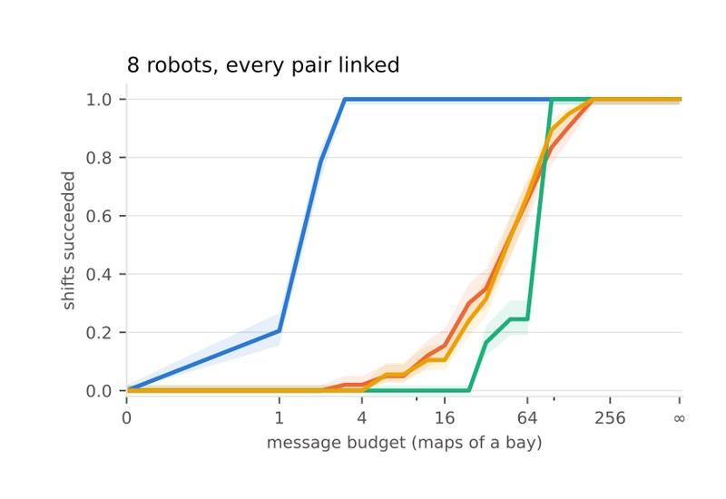
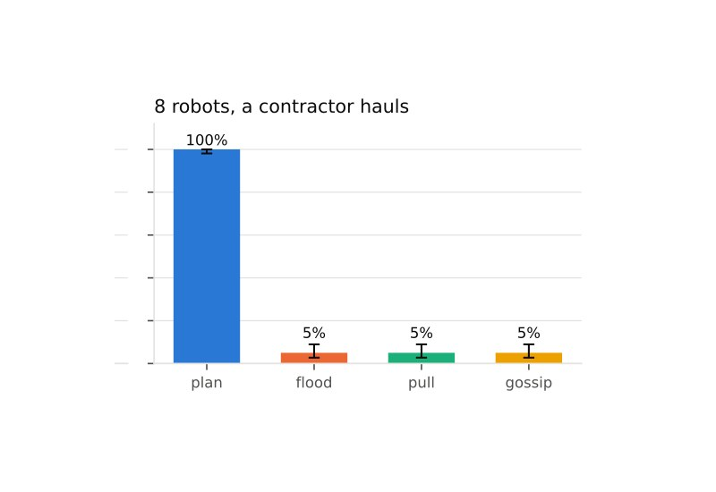
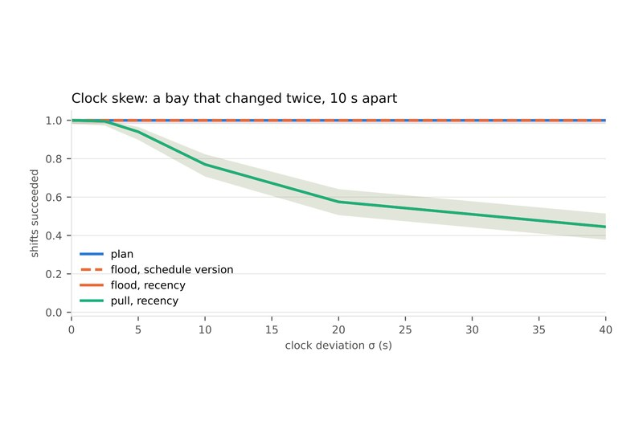
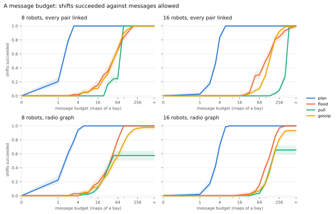
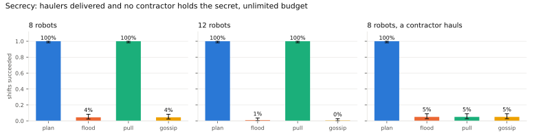
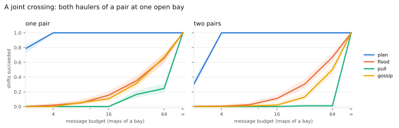
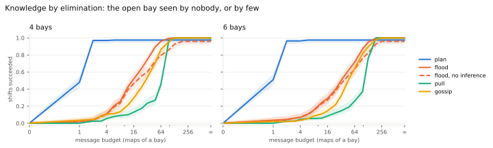
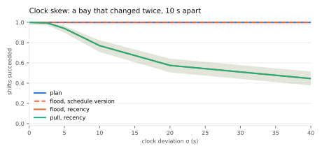

Epistemic planning against sharing · 2400 paired instances · four regimes · eight robots in Gazebo
A fleet whose maps have gone stale can be repaired in two ways. A plan decides who tells whom what. A protocol shares maps without deciding anything: it floods every reading to every robot, has each hauler ask before it goes, or lets random pairs gossip. On the stale-maps floor the plan sent three maps where sharing sent 168. That leaves two questions open: whether the advantage is only a smaller count that a protocol approaches by sending more, and whether there are tasks no protocol does at any count, and why.
The answer is a proposition and its converses. With an unlimited budget on a connected radio graph, goals that mention only the floor, and a merge rule that orders readings as they were taken, flooding leaves every robot holding the fleet's freshest reading of every bay. Its haulers then do what they would do knowing everything the fleet saw, and the plan has only messages to save. Each condition, removed, separates the two. We state each separation, measure it on instances drawn for it, and run one of them in Gazebo.
Every strategy runs on the same instances, so each comparison is paired: Wilson intervals on success, exact McNemar tests on the differences, Wilcoxon on message counts. The plan is checked against the protocols' own simulator: its messages are replayed on the readings, and the study stops if a policy that succeeds in the model fails there. None did. The baselines are their strongest versions: flooding re-sends only what changed, and pull asks about every bay.
Package stale_map_demo, directory study/; policies from eplansys, grounding by plank, search by Aletheia. Full account in When Planning Pays (PDF): the propositions and their proofs, the design, every cell and the floor.
On the floor
The goal adds one conjunct to the stale-maps goal: \[ \mathit{delivered}(r_2) \wedge \mathit{delivered}(r_4) \wedge \mathit{delivered}(r_8) \wedge \neg B_{r_4}\,\mathit{blocked}(t_1). \] Aletheia's policy is the one it finds without the secret: r6 tells r2 that t3 is open, r2 tells r4 and r8, and each crosses t3. No message is about t1. The protocols' sends were computed on this floor by the study's simulator and run by the mission in the same order, through the same relay the plan's reports use, each moving a robot's living map. An analysis predicted each run before it started, and the mission checked the run against it.
| strategy | messages | delivered | contractor sent the secret | stale after |
|---|---|---|---|---|
| flood, unlimited | 189 | r2, r4, r8 | yes, by r2 | 0 |
| flood, stopped at 3 | 3 | none | no | 9 |
| pull | 126 (63 requests, 63 replies) | r2, r4, r8 | yes, by r1 | 6 |
| plan | 3 | r2, r4, r8 | no | 8 |
Flooding repairs every map and tells the contractor with it. Pull repairs the haulers' maps, and r4, being a hauler, asks about t1 and is told. Flooding with the plan's three messages delivers nothing: its first three sends were r4's stale readings, to r1, which does not haul. In the plan's run the epistemic state and the robots' maps agreed on all 24 beliefs. The floor is one instance; how often each of these happens is the study's.
What the study shows

A budget 3 to 6 messages, against 96 to 512 Flooding pays 2|E||T| messages before it knows who needs what. The plan sends one reading to each misled hauler. See the budget →
A goal over beliefs A secret flooding keeps only if nobody knew it Flooding kept the secret in exactly the instances in which no robot saw the change: 600 of 600 predicted. The plan kept it in all. See the secret →
Clocks that disagree Skew breaks recency, not sharing The plan is unaffected by skew, and so is flooding merged by the schedule's version. This one needs no planner. See the clocks →The setting
A fleet \(A\) of \(n\) robots shares a floor with \(B\) bays and a radio graph \(G = (A, E)\). A forklift changes some bays during the shift, and each robot sees each change with probability 0.3. Each robot holds, for each bay, a reading: open or blocked, the stamp at which it was taken on its observer's clock, the version of the bay it reflects (the forklift's slot, 0 for the shift map), and the observer. A message is one robot's reading of one bay sent to a robot it is linked to, merged by one of four rules: recency, the later stamp; version, the later slot, the schedule used as a logical clock; overwrite, the sender's; and confidence, the receiver's, which is what the repository's fusion does with readings of 0 and 100.
| strategy | what it sends |
|---|---|
| flood | every robot sends every neighbour its reading of every bay, then re-sends a bay to a neighbour only when its reading has changed; relays reach robots no link joins directly |
| pull | each hauler asks every neighbour about every bay, a request and a reply each; no relays |
| gossip | random linked pairs exchange whole maps until twenty exchanges in a row change nothing |
| plan | Aletheia's policy over the instance in EPDDL: a report \(\mathit{send\text{-}open}(i,j,t)\) requires \(B_i\neg\mathit{blocked}(t) \wedge B_iB_j\,\mathit{blocked}(t)\), is seen by sender and receiver only, and is counted as one message |
After the messages each hauler crosses, among the bays its map shows open, the one with the freshest reading. The planner does not minimise messages, so each policy is shortened by action elimination: each message, latest first, is dropped if the goal is still reached. This removed 6179 messages from 1112 of 2390 policies.
When sharing is enough
Let \(G\) be connected, the budget unlimited, and the merge rule recency or version. Flooding stops with every robot holding \(\mu\), the map that has for each bay the greatest reading of it in the fleet, after at least \(2|E|B\) and at most \(2|E|\sum_t c_t\) messages, where \(c_t\) is the number of distinct readings of bay \(t\).
Taking the greater of two readings is associative, commutative and idempotent, so a robot ends with the greatest reading that reaches it, in any order; it reaches every robot within the graph's diameter in rounds, since a robot re-sends a bay whenever its reading changes. If, further, the goal mentions only the floor and the merge order agrees with the order in which readings were taken, every hauler crosses the bay it would choose holding every reading the fleet has. The plan can then do no better, only send less.
The four conditions are an unlimited budget, a connected graph, a goal over the floor alone, and clocks that order readings as they were taken. Where the study meets all four, flooding succeeded on 800 of 800 instances, as did the plan.
Without an unlimited budget
Flooding sends \(2|E|B\) messages in its first round whatever the instance, and which robot hears which reading within a smaller budget depends on the order of sending, not on which haulers are misled. A strategy that knows who needs what can succeed with one reading per misled hauler, sent along a path from a robot that holds it, and needs at least that many.

For eight robots on a complete graph \(2|E|B = 168\), and flooding's measured median was 189; for sixteen, 720 against 765. The plan's median was 2 and 4. Pull is one hop: a hauler hears only its neighbours, and on sparse radio graphs it succeeded on 58% and 66% of shifts at any budget.
| cell | plan | flood | pull | gossip |
|---|---|---|---|---|
| 8 robots, complete | 3 | 192 | 96 | 128 |
| 16 robots, complete | 6 | 512 | 512 | 384 |
| 8 robots, radio graph | 6 | 96 | never | 256 |
| 16 robots, radio graph | 6 | 256 | never | never |
The smallest budget at which each strategy reached 95% success, merging by recency.
Without a goal over the floor alone
Let a contractor \(c\) be connected to the robots that saw bay \(t\) staged, and let the goal require \(\neg B_c\,\mathit{blocked}(t)\). With an unlimited budget and a merge that orders readings as they were taken, flooding meets the goal if and only if no robot saw the staging.
If one did, its reading is the freshest of \(t\), and flooding gives it to \(c\) with every other. The study confirms this exactly: flooding succeeded on 9, 2 and 10 of the 200 instances in each secrecy cell, in every case the instances in which nobody saw the staging. Pull sends only to haulers, and keeps the secret while no contractor hauls; a contractor that hauls asks about every bay and learns it. The plan kept it in all 600 instances, because a map report is seen by its sender and receiver only, and \(\neg B_c\,\mathit{blocked}(t)\) is a constraint its search meets by sending \(c\) nothing about \(t\). A protocol that did the same would have the goal written into it.

A pair of haulers must cross the same bay, each believing it open and believing the other does: \(B_hB_k\neg\mathit{blocked}(t)\). When every robot holds \(\mu\) and uses one choice rule, the pair agree without either believing anything of the other, and every protocol succeeded on all 400 joint instances without a budget. The common protocol stands in for the second-order belief. Under a budget the maps differ and pairs split: the plan reached 95% at 4 messages, and no protocol did at 64.

Without observation
Exactly one of \(B\) bays is open, which every robot knows, and which one is not. Each robot sees each bay with probability 0.3, and the open bay may be seen by nobody: the fleet's distributed knowledge determines it, and the model is S5.
A hauler holding readings of \(m\) of the \(B-1\) shut bays, and none of the open one, needs at least \(B-1-m\) further readings, or one reading of the open bay if any robot has one. A report of a belief, \(\mathit{tell\text{-}open}(i,h,t)\), from a robot that knows \(t\) open by elimination, needs one.

The plan sent a median of 2 messages with four bays and 1 with six; flooding sent 224 and 336, pull 112 and 168. The advantage is in what a message carries: a report of a belief carries the sender's inference, a reading only what its observer saw.
Without a common clock
Two readings taken at true times \(\tau < \tau'\) by robots whose clocks are off by \(o\) and \(o'\) are inverted by recency if and only if \(o - o' > \tau' - \tau\); for normal offsets of deviation \(\sigma\) the probability is \(\Phi\bigl(-(\tau'-\tau)/(\sigma\sqrt2)\bigr)\). The version order agrees with time whatever the clocks.

At \(\sigma = 10\) s some bay's readings were inverted in 63 of 200 instances and every recency protocol failed on 46; at 40 s, 128 and 111. Every robot ending with \(\mu\) predicted flooding's outcome on 200 of 200 instances at every \(\sigma\). The plan succeeded at every \(\sigma\), and so did flooding merged by version. The plan's advantage here belongs to the version order, and a protocol has it for the price of a counter.
The study
An instance is kept only if the shift fails with no message at all; 186 were skipped. The plan was solved once per instance, with a 120 s limit on one thread, alongside other work on the same machine. It solved 2390 of 2400: the ten it did not are elimination instances, five with four bays and five with six. The median solve took 0.08 s, the 95th percentile 2.9 s and the slowest 10.1 s. A protocol needs no solving, and where the conditions of Proposition 1 hold that is the better trade.
| regime | cells | swept | what removes the plan's advantage |
|---|---|---|---|
| budget | 8 and 16 robots, complete or radio graph | budget 0 to 512, unlimited | an unlimited budget |
| secrecy | 8 and 12 robots; 8 with a contractor that hauls | budget 2 to 64, unlimited | nothing, once a contractor hauls |
| joint | one and two pairs | budget 2 to 64, unlimited | an unlimited budget |
| elimination | 4 and 6 bays | budget 0 to 512, unlimited | an unlimited budget, with inference |
| skew | 8 robots | \(\sigma\) 0 to 40 s | merging by version |
An earlier run used a pull that stopped asking at the first bay a hauler then believed open. A staging nobody saw leaves that bay open on every map, so it failed where flooding, which takes the freshest open reading, did not. The pull reported here asks about every bay; both runs' data are kept.
Limits
References
Reproduction
cd ros2_ws/src/stale_map_demo/study python3 run_study.py --out /tmp/study --seeds 200 --workers 10 # 2400 instances, ~15 min python3 analyze.py --csv /tmp/study/study.csv --out /tmp/study/analysis cd .. python3 tools/fleets.py --fleets secret flood flood3 pull # the floor's predictions ros2 launch stale_map_demo stale_maps_launch.py fleet:=secret # also flood, flood3, pull
The study's results, one row per instance, strategy, merge rule and budget: when_planning_pays_study.csv.gz (1.2 MB), and the summary every figure and table here is drawn from, when_planning_pays_summary.json.